8 Encontros Individuais On-line
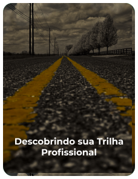
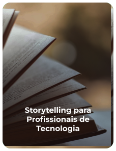
 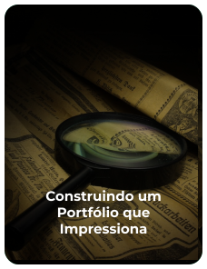
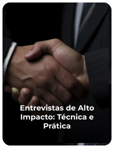
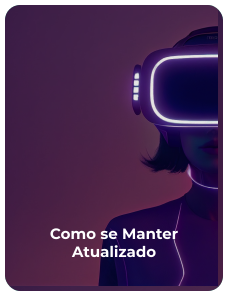
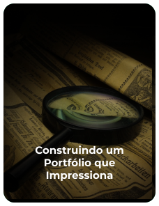
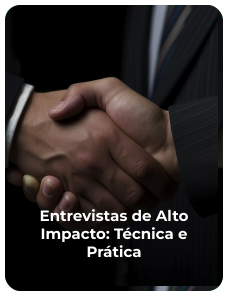
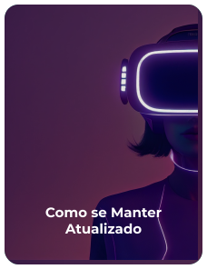

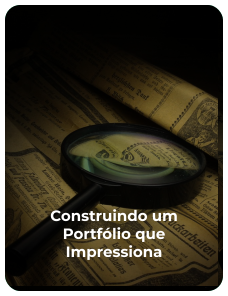
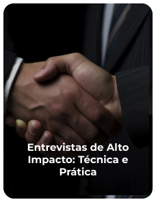
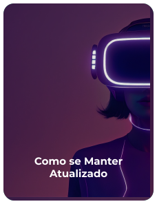
1 ENCONTRO POR SEMANA
DURAÇÃO DE 1H30M POR ENCONTRO
CONVIDADOS ESPECIALISTAS*
SESSÃO DE PERGUNTAS
FEEDBACK PERSONALIZADO
*Nos encontros “Construindo um Portfólio que Impressiona” e “Entrevistas de Alto Impacto: Técnica e Prática”.